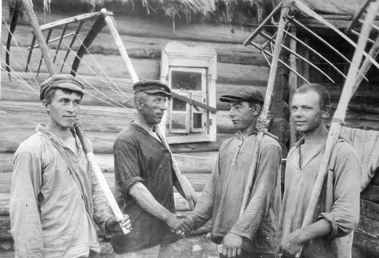
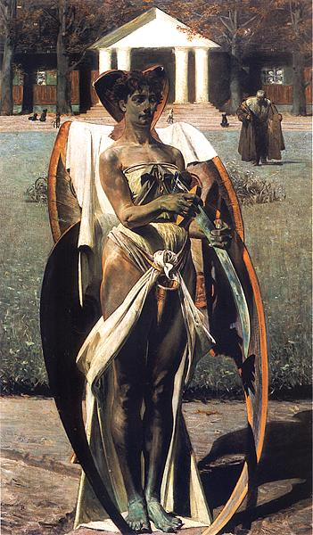

Kosa - narzędzie rolnicze służące do ścinania (koszenia) traw, zbóż i zielonek.
Kosa składa się z długiego wygiętego noża (tzw. ostrza) zamocowanego na długim drzewcu tzw. kosisku. Ostrze noża znajduje się po wewnętrznej stronie wygięcia - forma taka ułatwia zagarnianie i ścinanie. Niektóre kosiska są zaopatrzone w jeden lub dwa krótkie uchwyty, zamocowane prostopadle do długiego drzewca. W przypadku kos z kosiskiem drewnianym, ostrze kosy jest zamontowane na kosisku przy użyciu metalowej obejmy i drewnianego klina.
W przypadku koszenia zbóż do kosisko jest przymocowywany pałąk (czasem pokryty rozciągnietym płótnem) w celu lepszego zagarniania i układania skoszonego zboża w tzw. pokosy.
Kosa jest udoskonaloną formą sierpu. Użycie kosy rozpowszechniło się na Bliskim Wschodzie od około XII wwieku, natomiast w Europie od XVII wieku. Jej szerokie upowszechnienie wiąże się zapewne z potanieniem kosztów wytopu stali, surowca stosowanego do masowej produkcji narzędzi.
Narzędziami niezbędnymi do obsługi kosy są osełka, babka i młotek. Osełka służy do ostrzeniu ostrza kosy, jest ona wytwarzana ze ścieralnego kamienia. Osełka była przechowywana w pojemniku przypinanym do pasa kosiarza tzw. kuśce. Dla lepszego ostrzenia osełka była moczona w wodzie lub cały czas namaczana w wodzie poprzez wlanie do kuśki wody.
Babka wraz z młotkiem służy do klepania ostrza kosy, czynność ta polega na równomiernym uderzaniu młotkiem w krawędz tnącą ostrza kosy w celu zmniejszenia jej grubości, w tym czasie ostrze leży na babce. Babka jest metalowowym klinem wbijanym w pniak drewniany, z płaską główką, na której kładzie się płasko ostrze kosy.
Prawdziwcy znawca kos potrafił rozpoznać jej jakość po dzięku wydawanym przez ostrze kosy przy uderzeniu o kamień lub metal.
Kosa jest też symbolem Śmierci, która zbiera swoje żniwo.
Zobacz więcej maszyn i narzędzi rolniczych
źródła: www.wikipedia.pl, www.ksabak.republika.pl, www.wynalazki.mt.com.pl.

Brygada kosiarze w kołchozie. ZSRR 1927- 30 rok. (c) www.turgenev.org.ru.

Jacek Malczewski, Thanatos I, 1898